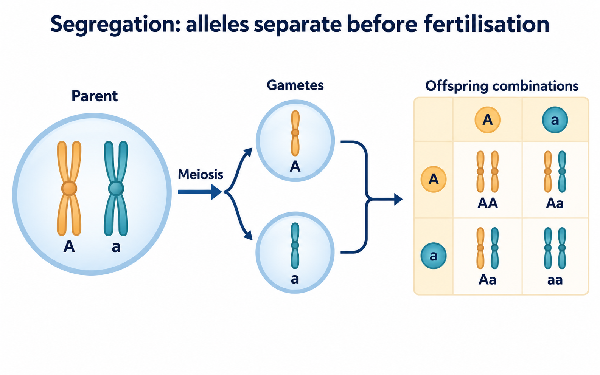

DRAFT FOR ACTUAL CONTENT REVIEW — not published. Proposed replacement for the existing Mendelian guide, prepared November 12, 2026. The examples below are invented teaching models, not experimental records or examination questions.
A cross starts with two parental genotypes. For a single autosomal locus in a diploid organism, Aa means that the individual carries A and a. A gamete receives one allele at this locus after segregation. The gamete is therefore A or a, not Aa. Fertilisation combines one contribution from each parent into an offspring genotype.
Keep the two operations separate: segregation determines the contributions; fertilisation combines them. A phenotype rule is needed only when you translate an offspring genotype into the trait category being scored. Drawing the phenotype first can conceal which alleles actually travelled through the cross.

Consider Aa × Aa. For this simplified model, assume equal allele segregation and random fertilisation. Each parent's gametes contribute A with probability 1/2 and a with probability 1/2. To compare the predicted proportions with counted surviving offspring, also assume that the genotype classes have equal survival and are scored reliably.
These assumptions explain why each pairing below has probability 1/4. A square is a way to organise those pairings; the number of boxes by itself does not establish equal probabilities.
| First parent's contribution | Second parent's contribution | Offspring genotype | Probability |
| A | A | AA | 1/4 |
| A | a | Aa | 1/4 |
| a | A | Aa | 1/4 |
| a | a | aa | 1/4 |
There are two routes to Aa because the A allele can come from either parent. For this ordinary autosomal model, those two ordered contributions belong to the same heterozygous genotype class. Add their probabilities: 1/4 + 1/4 = 1/2. The genotype expectations are therefore 1/4 AA, 1/2 Aa and 1/4 aa. Check that the three probabilities sum to one.
Now specify complete dominance for the trait being scored: AA and Aa are assigned to the same phenotype category, while aa belongs to the recessive category. The dominant-category probability is 1/4 + 1/2 = 3/4. The recessive-category probability is 1/4. This gives the familiar 3:1 expected phenotype ratio.
The 1:2:1 genotype result and the 3:1 phenotype result answer different questions. Complete dominance groups two genotypes into one visible category. It does not remove a from an Aa individual or establish whether that allele is transcribed. Nor does the word dominant tell you that A is common, advantageous or associated with a healthier organism.
Appearance alone therefore cannot distinguish AA from Aa in this model. Investigating an unknown parent is the separate task developed in the existing testcross guide.
Use an invented batch of 40 offspring from the stated Aa × Aa model. Multiplying 40 by each genotype probability gives expected counts of 10 AA, 20 Aa and 10 aa. Grouping the first two classes gives an expectation of 30 dominant-category and 10 recessive-category offspring.
Suppose a fictional scored batch instead contains 12 AA, 17 Aa and 11 aa. The counts still total 40, and the phenotype totals are 29 and 11. This record differs from the expectations. That difference alone neither disproves segregation nor validates every model assumption. Real observations require attention to sampling, scoring and survival; deciding whether a discrepancy is statistically unusual requires an appropriate analysis, not a demand that the ratio match exactly.
A useful correction to “40 offspring must contain exactly 10 aa” is: “The model predicts an expected aa count of 10; a particular sample can differ.” Keep the prediction and the observed count in separate columns in your notes.
If Aa appears in your gamete list, you kept both alleles together. Return to segregation. If you obtain only one route to Aa, you lost the pairing in which the second parent supplies A. If you report 3:1 when asked for genotypes, you grouped phenotype categories too early. If you infer AA from dominant appearance alone, you discarded Aa without evidence.
Do not repair these errors by memorising more ratios. Locate the operation that needs correcting, then rebuild the same cross. Changing the parents or the phenotype rule requires checking the calculation again.
Without looking at the table, write the two parental genotypes, each parent's gamete probabilities, the four pairings, and the grouped genotype and phenotype probabilities. Beside the phenotype result, state the complete-dominance assumption. Beside any expected count, write the sample size used.
In your explanation record, keep one conclusion, the pairing calculation supporting it, and one limit: this model does not determine an unknown parent's genotype from appearance or force a finite sample to match its expected counts. Continue to the testcross guide for unknown-parent inference, or compare the expression rule in the incomplete-dominance and codominance guide.
NCERT Class XII Biology, Chapter 4: https://ncert.nic.in/textbook/pdf/lebo104.pdf . The official chapter request returned 502 during this revision; exact current section and reprint claims remain unverified and must not be advertised as checked.
Checked supplementary sources: OpenStax Biology 2e, section 12.2, https://openstax.org/books/biology-2e/pages/12-2-characteristics-and-traits (genotype/phenotype distinction and Punnett probability reasoning); NHGRI Mendelian Inheritance, https://www.genome.gov/genetics-glossary/Mendelian-Inheritance (general inheritance background). Both pages were opened on November 12, 2026. The molecular-expression qualification still needs focused source verification and actual biology review. No source figure, question or dataset is reproduced; the 40-offspring counts are constructed.